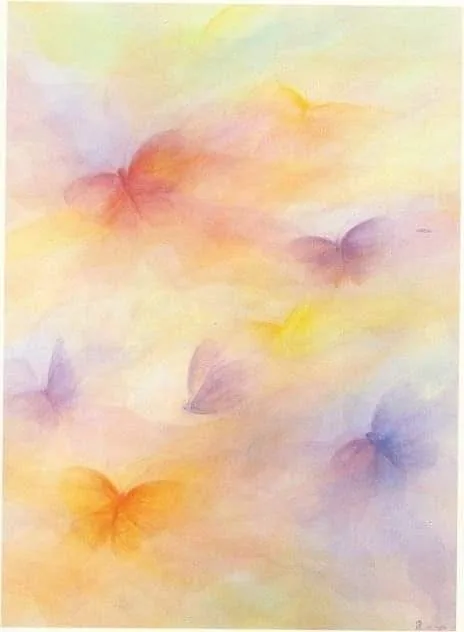
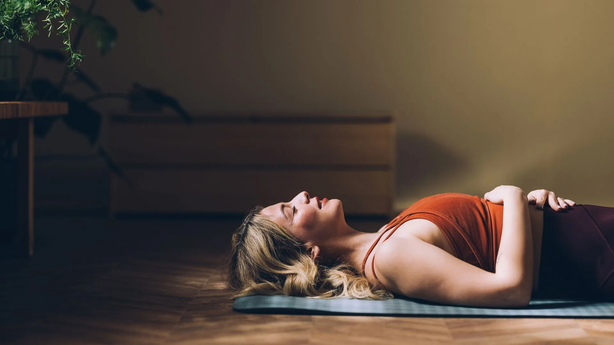
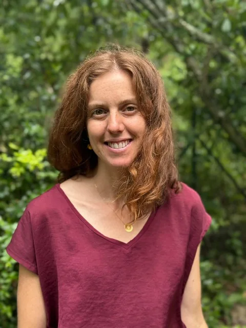

Traverser,
transformer,
s'ancrer.
À Bagnères-de-Bigorre, j'accompagne enfants et adultes dans la désensibilisation des traumas, le Breathwork et l'Art-thérapie.
Mes accompagnements
Des approches thérapeutiques, corporelles et créatives qui se complètent, pour un travail qui touche l'être entier.
EMDR-DSA
Désensibilisation des traumas et des stress associés. Une approche validée scientifiquement pour retraiter ce qui est resté figé : chocs, répétitions douloureuses, blessures relationnelles.
Enfants · Adultes · Cabinet 65Breathwork
La respiration consciente comme outil de libération. En groupe ou en individuel, le Breathwork ouvre un espace de lâcher-prise profond, d'accès aux émotions et de transformation sans passer par le mental.
Groupe · Individuel · PrésentielHypnose
Utilisée comme outil d'accès aux ressources profondes et de reconfiguration des schémas inconscients. Complémentaire à l'EMDR pour certains accompagnements.
Individuel · Sur demandeArt-thérapie
Médias manuels · Ancrage · IntégrationL'art-thérapie peut venir compléter le travail thérapeutique par la création. Après avoir traversé quelque chose en séance, la main, le corps et la matière deviennent des relais d'intégration.
Dessiner, peindre, modeler l'argile, manipuler des marionnettes : bien plus que des exercices artistiques, ce sont des passages. Ce qui a été compris dans la tête et ressenti dans le corps vient se déposer et s'ancrer dans la matière.

EMDR · DSAQu'est-ce que
l'EMDR ?
L'EMDR (Eye Movement Desensitization and Reprocessing) est une approche thérapeutique développée dans les années 1980 pour traiter les traumas et les expériences émotionnellement douloureuses non digérées.
En utilisant des stimulations bilatérales alternées (mouvements oculaires, sons ou tapotements), l'EMDR permet au cerveau de retraiter les souvenirs figés et de libérer leur charge émotionnelle. Ce qui était bloqué se remet en mouvement.
La méthode DSA (Désensibilisation des Stress et traumas Associés) en est une application élargie, accessible même pour les traumas dits de « petite t » : situations d'humiliation, de rejet, de honte, d'insécurité répétée.
Évaluation & préparation
Comprendre ce qui est venu se loger, créer la sécurité intérieure.
Désensibilisation
Stimulations bilatérales pour dénouer la charge émotionnelle du souvenir.
Installation & ancrage
Renforcer la ressource, laisser s'installer la nouvelle perspective.
Le Breathwork
Le Breathwork utilise la respiration consciente comme porte d'entrée vers ce que le mental ne sait pas atteindre. Le souffle, amplifié et soutenu, ouvre un espace de lâcher-prise profond où les émotions retenues peuvent enfin circuler.
Sans parole, sans analyse : c'est le corps qui fait le travail. Tensions accumulées, émotions figées, charges anciennes : la respiration vient les remettre en mouvement, à votre rythme.
Je facilite des sessions de groupe mensuelles co-animées (Breathwork Chamanique Healing) ainsi que des séances individuelles, en présentiel.

Souffle · Lâcher-priseL'hypnose
L'hypnose ouvre un accès direct aux ressources profondes et permet de reconfigurer les schémas inconscients, ces automatismes qui rejouent les mêmes scénarios malgré nous.
Accéder aux ressources
Contourner le mental pour mobiliser ce qui, en vous, sait déjà apaiser, réparer, avancer.
Reconfigurer les schémas
Travailler en douceur les automatismes inconscients pour ouvrir de nouveaux chemins.
En complément de l'EMDR
Pour certains accompagnements, l'hypnose vient préparer ou approfondir le travail de désensibilisation.
Individuel · Sur demande
Enraciner
ce qui a changé
Le travail thérapeutique peut rester suspendu dans le mental si on ne lui donne pas un corps, une forme, une matière. L'art-thérapie est bien plus qu'une illustration de ce qui a été dit : c'est un passage par lui-même.
Dessiner, modeler, peindre : ces gestes simples activent d'autres voies neurologiques, touchent d'autres mémoires. Ils permettent à la transformation de s'ancrer vraiment, dans le corps, dans le réel.

Fanny Defoort · Bagnères-de-Bigorre
Qui suis-je ?
Mon parcours de formation
- En cours de formation en psychanalyse et psychothérapie intégrative (IF2PI, Corinne Vera Alexandre)
- Formation en EMDR-DSA (Ahtma)
- Formation en Breathwork (Eva Swan)
- Diplôme d'État d'éducatrice de jeunes enfants
- Formation à la pédagogie Waldorf en petite enfance
- Formation Accompagnement par les personnages intérieurs (Fabien Lesage)
- Formation en Communication Non Violente de Marshall Rosenberg (Muriel Kalfala)
- Diplôme de psychogénéalogie (Betty Tutrice)
Faire
le premier pas
Que vous souhaitiez un accompagnement individuel, participer à une session de Breathwork ou simplement poser des questions, n'hésitez pas à me contacter. Je réponds sous 48h.
65200 Bagnères-de-Bigorre
Samedi : 8h – 18h
Sentez-vous libre de laisser un message ou d'envoyer un SMS, je vous rappelle dès que possible.
Envoyez-moi un message
Je vous réponds personnellement sous 48h.
Le cabinet
3 rue Soubies - 65200 Bagnères-de-Bigorre
À 10 minutes de Campan, 30 minutes de Lourdes, Lannemezan et Tarbes.